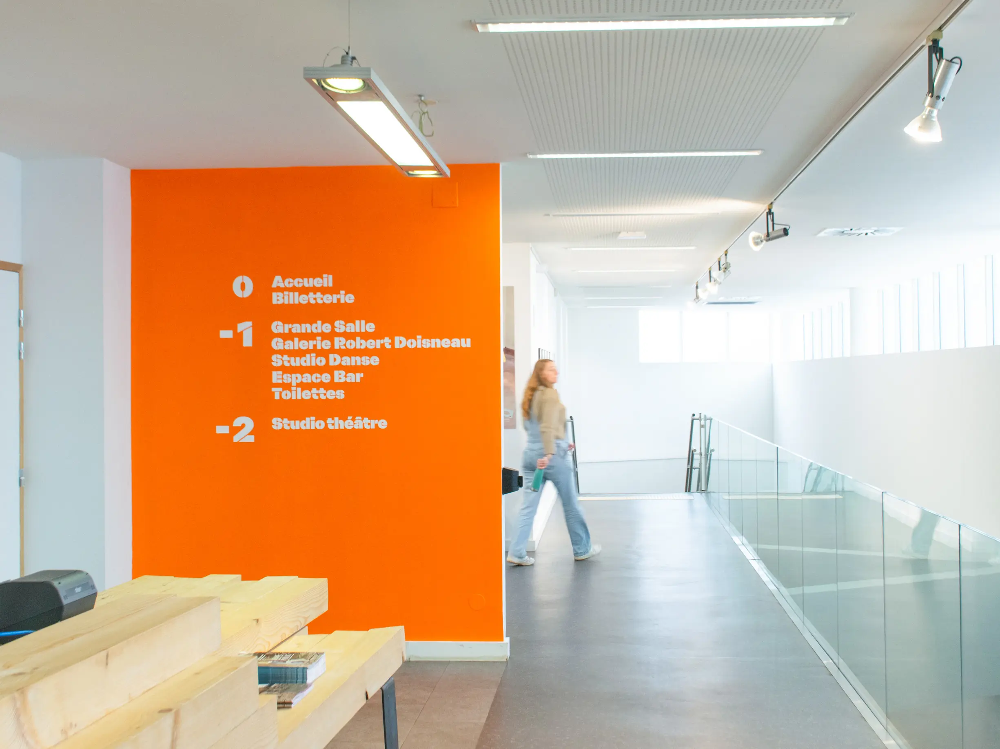
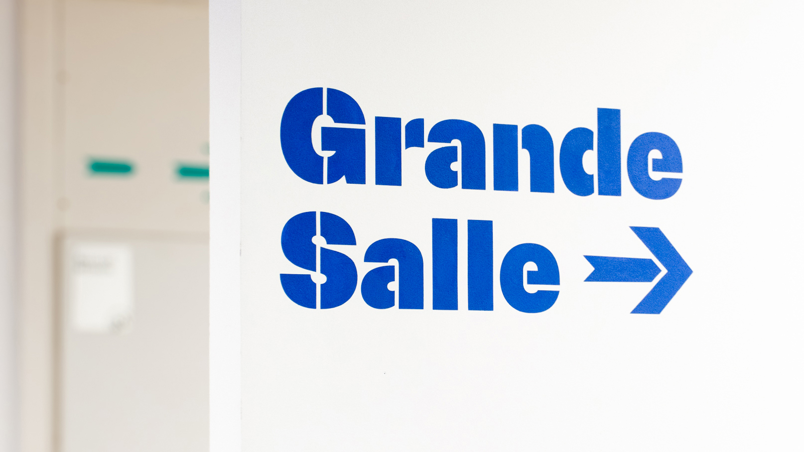
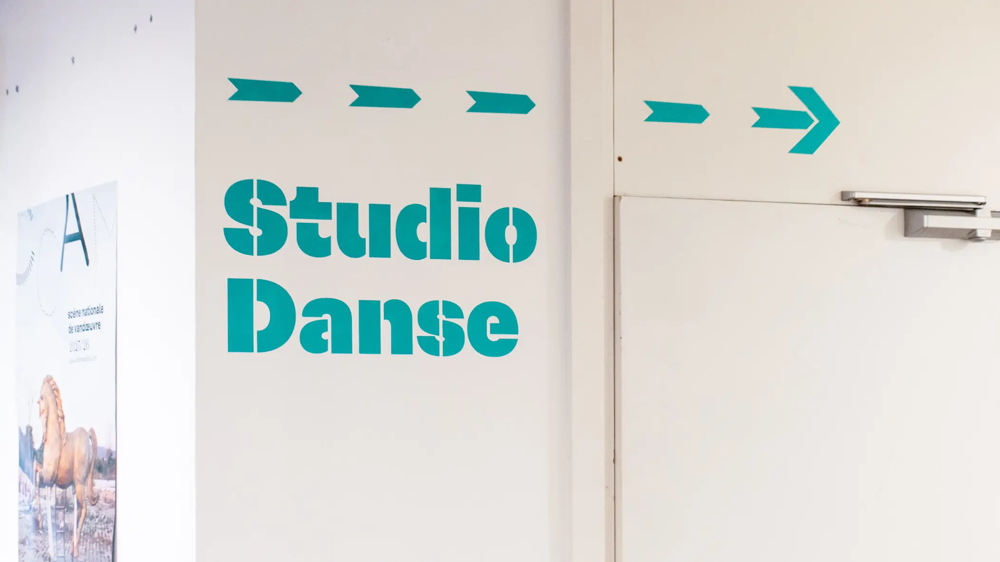
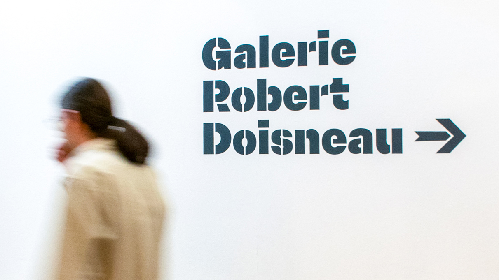
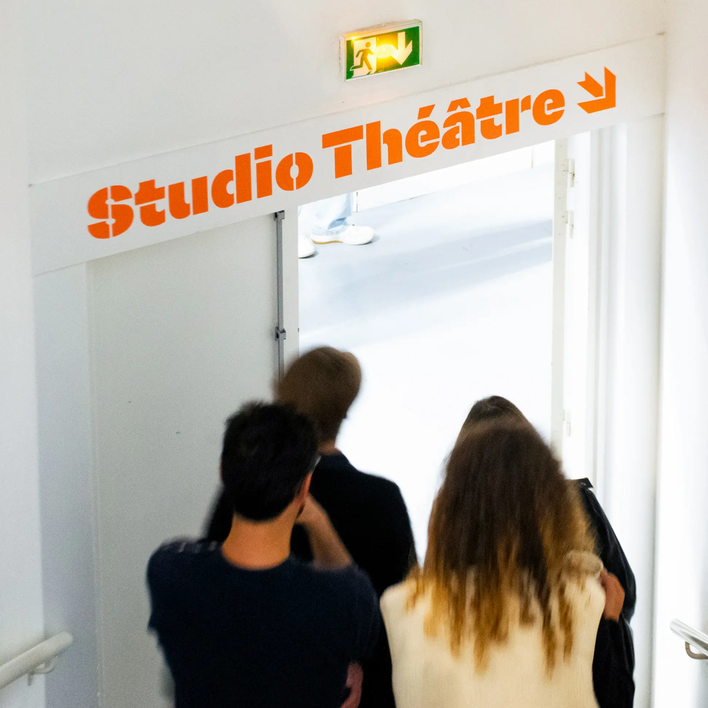
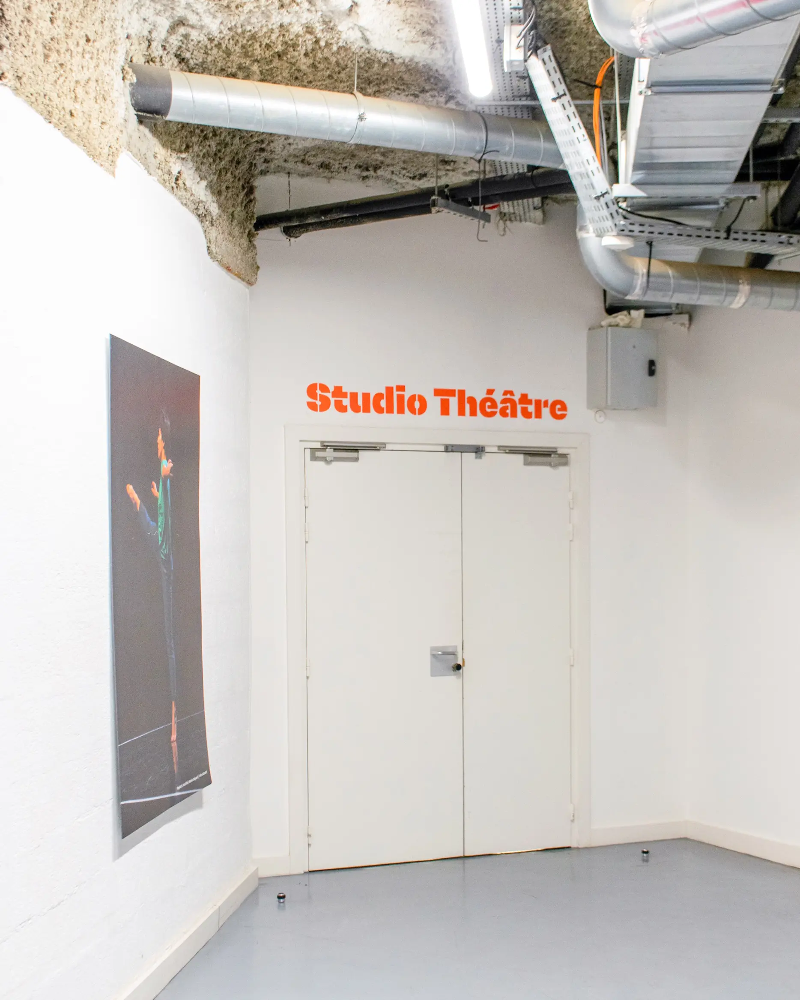
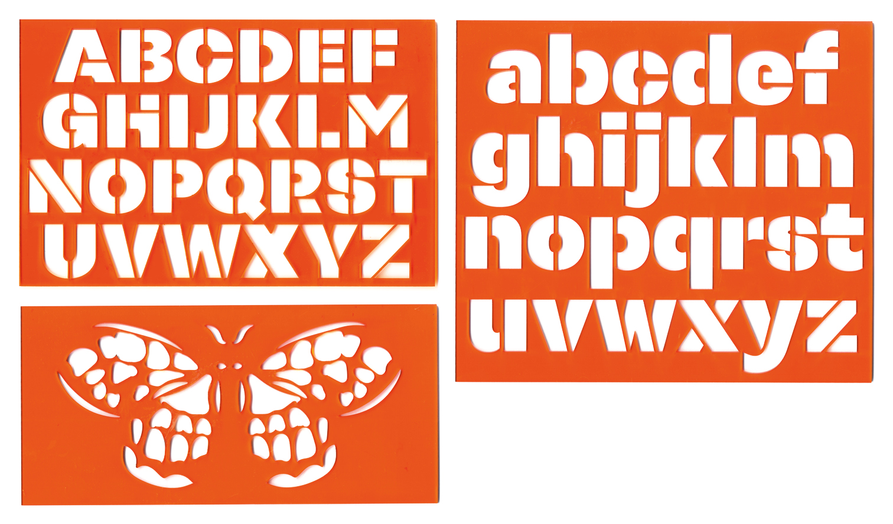
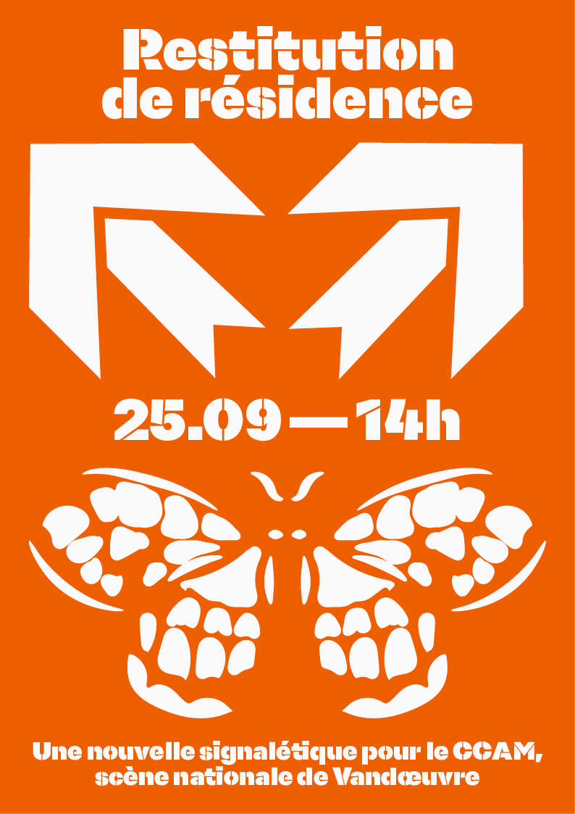

Signalétique du Centre Culturel André Malraux, scène nationale de Vandoeuvre
Dans le cadre d’une résidence effectuée au CCAM, scène nationale de Vandœuvre, une nouvelle signalétique a été conçue pour le lieu. Ce projet graphique situé s’est appuyé sur le choix d’en faire la pose avec des pochoirs, dans l’objectif de faire entrer une composante vernaculaire au sein même d’un centre culturel, qui se veut ouvert sur la ville de Vandœuvre-lès-Nancy. As part of a residency at the CCAM, Vandœuvre's national theatre, new signage was designed for the venue. This graphic design project was based on the decision to use stencils, with the aim of introducing a vernacular element into a cultural centre that aims to be open to the town of Vandœuvre-lès-Nancy.
― 2025
― normographes normographs
― affiche poster A3
― découpe laser laser cutting
― pochoirs en vinyle adhésif adhesive vinyl stencils







